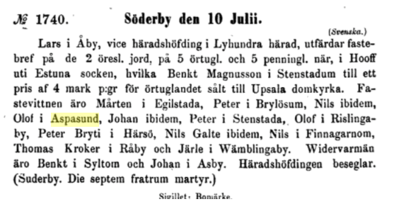
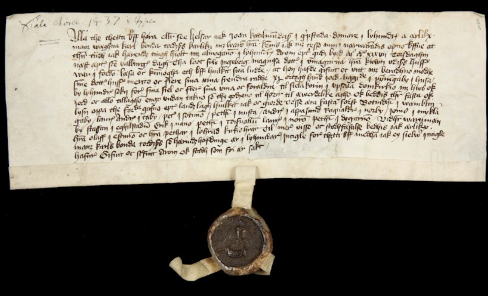

Namnet Aspsund betyder “sundet, där det växer aspar”. Byn som sedan byggdes intill denna vikingatida farled fick samma namn.
Aspsund som by har med all sannolikhet funnits sedan yngre järnåldern, vikingatid. Det var ungefär vid den tiden som strandkanten låg alldeles intill bytomterna/byvägen. Gravbacken [1] med ca 25 lämningar vid infarten till byn är daterad järnålder liksom gravfältet som finns på söder sida om landsvägen vid Brölunda i samma dalgång. På kartan hos Raa finns även gravfält [12] markerade i den skog som kallas Starrdalen några hundra meter nordväst om byn samt intill dessa även så kallad fossil åker [13] (betyder tidigt åkerbruk, ofta äldre järnålder eller bronsålder). Dessa är på betydligt högre höjd än nuvarande by och äldre.
Det har funnits resonemang att denna skog Starrdalen, i folkmun "Starrdaln" eller "Starrda'n" egentligen kommer av det i äldre ortsnamn förekommeande "sta" vilket betydde ’plats’ eller ’ställe’. Tex Stensta, Finsta, Bålsta. Dvs att namnet på skogen då egentligen betyder Sta-dalen, dvs dalen för ett boställe och inte dalen med Starrgräs. Kanske bodde man där redan under bronsålder/äldre järnålder.
Aspsund är omnämnt i flera gamla medeltida texter.
Svenska riks-archivets pergamentsbref [2] från och med år 1351

I ett dombrev källor [3] och [4] skrivet i Upsala 1409 gällande skatter nämns Aspesund.
“...item nio øresland jordh i Aspesund som Ingemund Jonsson hauer...Källa här även Unestam [4].
Här i en text från 1437 nämns en Anders i Aspsund.

Översättning på engelska. Har inte hittat någon på svenska.
Johan Kättilmundsson in Grävsta, judge in Lyhundra on behalf of Karl Tordsson Bonde, announces on county council in Lyhundra hardened on 10 ½ herring land in Penningby, Husby-Lyhundra parish, as Mrs. Ingeborg Magnusdotter in Vänngarn, widow of Mr. Knut Uddsson, with her daughter's wife Märta's consent donated to the soul choir in Uppsala Cathedral, according to gift letter (1436 10/8 - SDHK no. 22630 ) which she had read on the thing. Witnesses were church pastors Olof in Estuna and Peter in Lohärad. Fasters: Botvid in Vämblinge, Lars Andersson in Täby, Peter in Sätuna, Peter in Nodsta, Anders in Aspsund, Ragvald in Norrby, Jöns in Nyckeöby, Staffan in Torrvalla, Lars in Nora and Peter in Degarö. Sealants: Chief of Staff Karl Tordsson Bonde.Att det är just detta Aspsund som menas i texterna kan fastställas då det i texterna som helhet även nämns Lyhundra, närliggande kyrkor som Söderby och intilliggande byar.